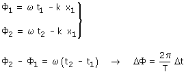
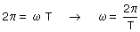

Fase temporal Considera una onda de fase: ωt - kx En un punto x1 esta fase valdrá: ωt - kx1 La fase de la onda particularizada para un punto se denomina fase temporal Se denomina diferencia de fase entre dos instantes a la diferencia de las correspondientes fases temporales:  (Observa que la relación entre tiempo transcurrido y la diferencia de fase es lineal lo cual significa que se pueden usar reglas de tres) Se denomina período (T) al tiempo que debe transcurrir para que la diferencia de fase sea 2π (Entonces los valores de la perturbación serán los mismos en los dos instantes):  |